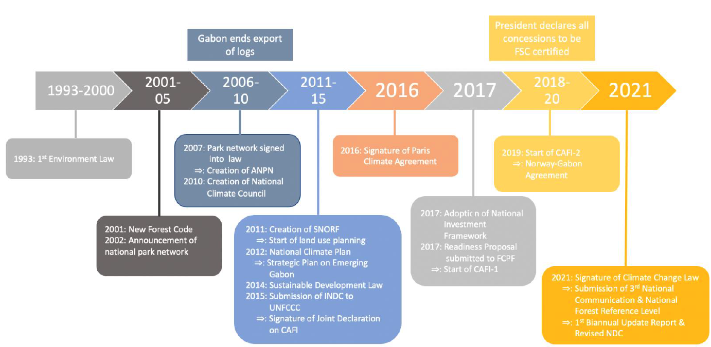
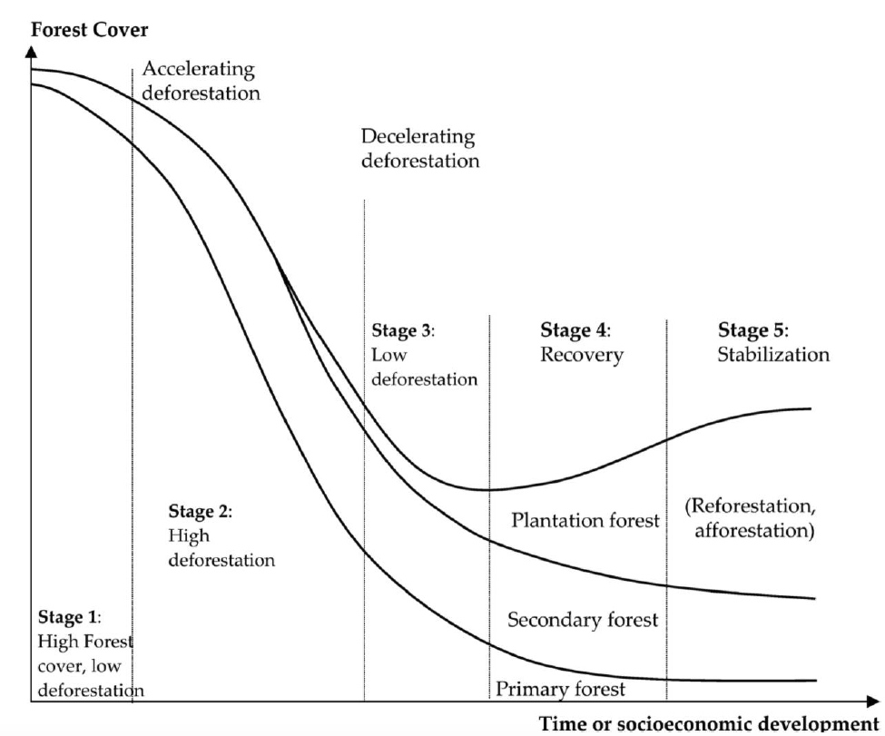
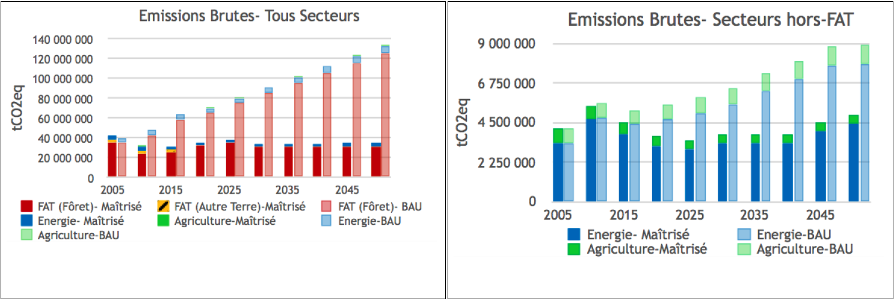
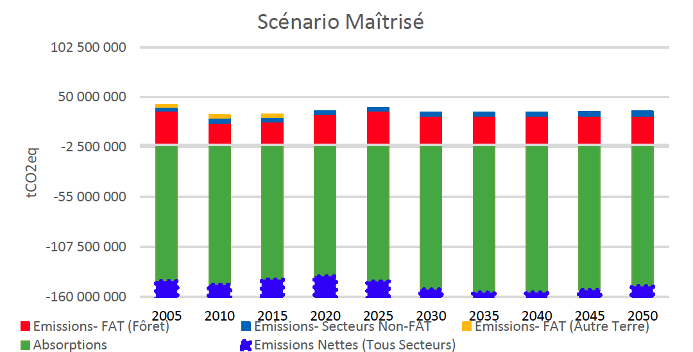
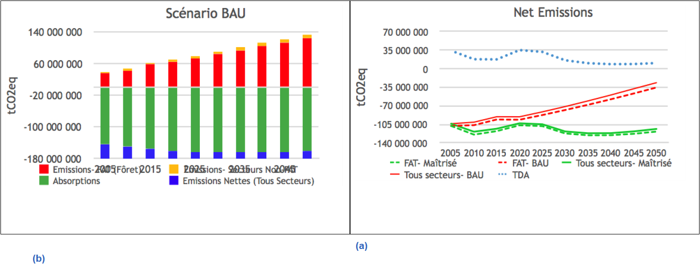
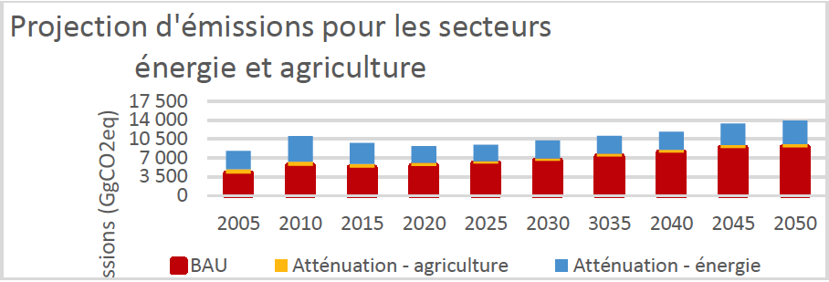

Conformément aux décisions 1/CP.19 et 1/CP.20 et à son plan stratégique de développement, le Gabon communique, à travers ce document, sa deuxième Contribution Déterminée au niveau National (CDN) pour lutter contre les changements climatiques et l’ensemble des informations relatives à cette deuxième CDN. Les éléments repris dans la Contribution Déterminée au niveau National du Gabon sont la synthèse des ambitions et des politiques publiques du Gabon qui, au moment d’opérer un tournant dans son développement, fait le choix de s’engager résolument dans un développement durable, basé sur des émissions de gaz à effet de serre (GES) maîtrisées. Cette ambition est d’autant plus résolue qu’elle est volontariste : du fait de ses politiques de gestion durable des forêts qui ont su préserver une dotation naturelle sinon condamnée à s’amenuiser en régime as usual, le Gabon est un important puits de carbone, absorbant plus de gaz à effet de serre qu’il n’en émet, et le restera grâce à l’approfondissement de ces politiques, tout en choisissant de réduire de manière additionnelle ses émissions de gaz à effet de serre. Cette soumission revêt un caractère doublement important pour le Gabon, en raison d’une part, de l’engagement du Président de la République à mener une politique de développement durable et d’autre part, pour contribuer à l’effort mondial de lutte contre le changement climatique.
Le Gabon s’engage sans conditionnalité à rester neutre en carbone jusqu’en et au-delà de 2050.
De manière conditionnelle, le Gabon mettra tout en œuvre, en vue de garantir une absorption nette en carbone de 100 millions de tonnes de CO2 au minimum par an, au-delà de 2050.
Le Gabon absorbe actuellement environ 100 millions de tonnes nettes d'équivalent CO2 par an (103 millions tCO2eq en 2020). Sur la dernière décennie, le Gabon a ainsi absorbé un peu plus d’un milliard de tonnes de CO2eq nettes et augmenté sa capacité de séquestration nette d’environ 100 millions de tonnes. Le Gabon a augmenté ses absorptions nettes, là où la plupart des pays ont connu une augmentation nette de leurs émissions.
Dans la seconde CDN, la République Gabonaise s’engage sans conditionnalité à rester neutre en carbone au- delà de 2050. Sous réserve de l'accès continu des produits du bois gabonais aux marchés internationaux, l’accès à un marché de carbone pour ses séquestrations nettes en forme d’ITMOs (Résultats d'atténuation transférés au niveau international) avec un prix de carbone compétitif et / ou d’un soutien international non-marché adapté. Le Gabon va tout faire pour garantir ses absorptions nettes à au moins 100 millions de tonnes d'équivalent CO2 par an, au-delà de 2050. Cela va largement au-delà de l’objectif de neutralité carbone communément adopté à l’échelle globale d’ici à 2050.
Le modèle économique du Gabon, déjà en cours de mise en œuvre de manière avérée et crédible, qui lui a permis et continuera de lui permettre d'éviter la courbe de la déforestation que connaissent tous les pays, développés et en développement, consiste à mettre en œuvre un vaste programme de transformation économique par le biais du développement durable dans tous les secteurs, soutenus par la création d'une industrie forestière et de transformation du bois soutenable au Gabon.
En transformant le bois localement, la valeur ajoutée dans l'économie nationale sera multipliée par dix, avec la création de dix fois plus d'emplois. En complétant la production de bois des forêts naturelles par des plantations à bilan carbone positif avec le boisement dans les zones de savane, le Gabon peut faire passer son industrie du bois d'un chiffre d'affaires de 1 milliard de dollars à 10 milliards de dollars par an et de 30 000 emplois actuels à 300 000 d'ici à 20301 tout en sécurisant le puits de carbone par ce scénario maîtrisé de gestion forestière et d’affectation des terres.
Toutefois, l’accompagnement de ce scénario maîtrisé nécessitera des investissements directs substantiels et continus dans des domaines tels que les infrastructures, la logistique, les services municipaux, l'aménagement du territoire et l'administration ; et, parallèlement, une transformation complète de tous les secteurs de l'économie, y compris la finance, les soins de santé, en passant par l'agriculture, la construction, le transport, le commerce de détail et la distribution, etc.
Le Gabon prévoit un effort substantiel pour limiter les émissions du secteur de l'énergie, deuxième secteur le plus émissif, aux niveaux de 2005 ou en dessous, notamment, en passant des énergies fossiles à l'énergie hydraulique et solaire, en améliorant l’efficacité énergétique dans les ménages, services, industries et transports, ainsi qu’en transformant les centrales au gaz naturel, et en mettant en œuvre le plan « zéro torchage » dans l’industrie pétrolière, et en généralisant l’interconnexion électrique.
En matière d’agriculture, le Gabon s’engage à la promotion d’une agriculture sans labour à travers le développement de l’irrigation agricole et de l’agroforesterie, la régularisation du foncier agricole, la préservation des zones à Haute Valeur de Conservation (HVC) dans les concessions agro-industrielles, ainsi que l’utilisation de plantes de couverture pour réduire les apports d’engrais chimiques azotés dans les plantations.
Pour atteindre ces objectifs, il est essentiel que le Gabon soit en mesure d'accéder à un financement climatique en échange des services écosystémiques qu'il continuera de fournir et, ce faisant, d'accéder au financement du capital de développement à long terme dont le pays a cruellement besoin pour mettre en œuvre son programme de développement économique durable et de transformation.
Si les paiements pour le carbone et les écosystèmes devenaient une réalité à l'avenir, ils rendraient l’exploitation forestière durable plus rentable financièrement, ce qui renforcerait encore le modèle, en rendant la récolte sélective plus compétitive par rapport aux autres utilisations des terres, qui détruisent les forêts, comme la culture du soja et l'élevage de bétail. Ils permettraient également de subventionner les coûts de gestion des zones protégées et des concessions forestières. Le scénario maîtrisé repose sur la conditionnalité que ces paiements voient le jour.
L’élaboration de la CDN du Gabon dépend également du fait que les effets du changement climatique ne faussent pas les taux historiques de changement des stocks de carbone dans les forêts tropicales du Bassin du Congo, de sorte que leur capacité à absorber le dioxyde de carbone soit sensiblement réduite. Si tel est le cas, la CDN du Gabon devra être révisée en conséquence, avec une ambition d’effort conservée mais tenant compte des données scientifiques quant aux cibles visées.
L'engagement du Gabon à maintenir son statut d'absorbeur net de CO2eq jusqu'en 2050 est par conséquent conditionné par les éventuels impacts des changements climatiques sur les forêts humides du Bassin du Congo et par la possibilité d'accéder au capital d'investissement nécessaire, à toutes les ressources connexes et aux technologies propres requises pour mettre en œuvre son plan de développement et de transformation économique sur la période allant jusqu'en 2050, et en particulier par :
l'accès continu des produits du bois gabonais (certifiés légaux, durables, positifs pour le climat et la biodiversité et socialement responsables) aux marchés internationaux;
l'accès au financement international du marché de carbone dans le cadre de l'Accord de Paris, qui reconnait la contribution historique et continue de la séquestration nette de carbone du Gabon à l'atténuation des crises liées au changement climatique et à la perte des services rendus par la nature en forme de Résultats d'Atténuation Transférés au niveau International (Internationally Transferred Mitigation Outcomes, ITMOs), ainsi qu’aux mécanismes non-marché appropriés ;
une avancée vers la reconnaissance internationale de la valeur des services écosystémiques du Gabon;
la disponibilité d'investissements dans le secteur des énergies renouvelables, de l’efficacité énergétique et d’une agriculture durable.
À des fins de comparaison, la CDN 2020-2025 présente des modèles de scénarios tendanciels (« Business as Usual » BAU) pour les différents secteurs responsables des émissions de GES. Pour le secteur Forêt et Autres Affectations des Terres (FAT), les niveaux d'émissions sont également comparés aux taux moyens de déforestation tropicale (Tropical Deforestation Average – TDA). La plupart des pays à forêt tropicale humide ont suivi et continuent de suivre des tendances d’évolution semblables au scénario TDA.
Le Gabon pourrait suivre cette trajectoire dans les décennies à venir, en l’absence de mesures fortes qui requièrent le soutien de la communauté internationale.
Les coûts économiques de l'adaptation seront importants et le Gabon aura besoin qu’un appui à l'adaptation soit mis à sa disposition.
Cet appui sera notamment nécessaire pour :
Compenser ou accompagner le Gabon à la perte des 60% de nos recettes actuellement générées par le pétrole et le gaz, qui pourraient disparaître d'ici à 2040 ;
Faire face à l'intensification de l'érosion côtière et à l'élévation du niveau de la mer, ce qui pourrait nécessiter la relocalisation de la deuxième ville du Gabon, Port-Gentil, ainsi que de grandes parties de la capitale, Libreville ;
Appuyer la transformation du secteur agricole gabonais en une industrie moderne, résiliente au changement climatique, à faible émission de carbone et capable de soutenir une société et une économie en pleine croissance et transformation ;
Soutenir l'amélioration de la surveillance scientifique avec la mise en place d’un système fiable de collecte de données climatiques qui couple des informations météorologiques, océanographiques et hydrologiques sur une plateforme centralisée ;
Améliorer la modélisation du système climatique complexe du bassin occidental du Congo, afin de permettre une meilleure prédiction des menaces futures ;
Revoir la conception des villes et des agglomérations pour les rendre résilientes au climat et mettre en œuvre l’importante planification, régionale, municipale et urbaine et la fourniture de services connexes qui seront nécessaires ;
Construire des infrastructures résilientes au changement climatique ;
Gérer l'augmentation inévitable du nombre de réfugiés climatiques, qui afflueront dans le bassin humide du Congo pour faire face à la perte de rendement agricole dans les régions et pays environnants ;
Répondre aux questions telles que l’augmentation des conflits homme – éléphant dues aux changements climatiques (chute de production de fruits dans la forêt tropicale à cause des changements climatiques) qui ont un impact significatif immédiat sur le bien-être des populations rurales.
Il est aujourd'hui communément reconnu que le monde est confronté à une double crise : le changement climatique et la perte de la nature et de la biodiversité. Au niveau international, le Gabon est l'un des pays qui a le moins contribué à ces crises. En fait, le Gabon a conservé un bilan carbone positif au cours du dernier millénaire et, au cours de la dernière décennie, il a absorbé en net un peu plus d'un milliard de tonnes d'équivalent CO2. Couvrant 11% de la forêt tropicale du Bassin du Congo, le Gabon abrite une biodiversité exceptionnelle et a fait preuve d'un fort leadership dans la région en termes de création, de gestion et de conservation d'aires protégées avec près d'un quart de son territoire national bénéficiant d'une protection.
Avec 88 % de son territoire recouvert de forêts, le Gabon est l'un des pays les plus boisés de la planète2 et a un statut unique, étant un puits de carbone dont les absorptions totales sont restées très largement supérieures aux émissions totales. Ce n’est pas le simple fruit d’une situation de rente naturelle, mais au contraire cela reste possible grâce à deux décennies d’efforts, durant lesquelles le Gabon a élaboré des lois environnementales et forestières strictes, transformant 21 % de son territoire en zones protégées, et 60% du territoire en concessions forestières durables.
Les grandes décisions politiques (voir également la figure 1) comprennent la loi forestière de 2001 (mise en œuvre à partir de 2005), qui rend obligatoire la gestion durable de toutes les concessions forestières ; la décision de 2002 (mise en œuvre de la loi sur les parcs nationaux de 2007) de créer un réseau de 13 parcs nationaux, qui couvrent 11 % du pays ; l'interdiction d'exporter des grumes prise en 2009 ; la création du Conseil National sur les changements climatiques en 2010 et l'adoption du plan national climat en 2012 ; l'adoption de la loi sur le développement durable et de la loi relative à la protection de l’environnement en 2014 ; la ratification de l'Accord de Paris en 2016 ; et la signature d'une ordonnance sur les changements climatiques en 2021.

Figure 1. Chronologie des initiatives du Gabon ayant un impact sur les émissions et la séquestration des GES.
Le Gabon ne se limite plus à son engagement tendanciel comme dans sa Contribution Prévue Déterminée au niveau National (CPDN) et entend plutôt aller vers une approche plus ambitieuse.
Cette seconde CDN est nationale et couvre tous les secteurs.
Étant donné que le bilan carbone du Gabon n'est pas seulement neutre, mais qu'il est positif (le pays absorbe plus de CO2 qu’il n’en émet), l’approche consiste, premièrement, à rester neutre en carbone, et ensuite à maintenir la capacité d’absorption nette du Gabon et, si possible, augmenter cette capacité, ce qui aura ainsi un impact positif sur les niveaux de GES dans l'atmosphère, jusqu'en 2025 et 2030 et plus loin.
Le Gabon a un statut assez particulier au sein de l’Accord de Paris. Le processus des CDN a été conçu pour aider les émetteurs nets à atteindre la neutralité, et n'est donc pas facilement applicable au Gabon. Dans une certaine mesure, on pourrait faire valoir que le Gabon a déjà atteint l'objectif de l'Accord de Paris, grâce aux mesures prises à partir de 2001, et que notre objectif consiste désormais à consolider ces acquis.
Cependant, le Gabon souhaite aller au-delà. En tant que membre d'une communauté globale, le Gabon reconnaît qu'il a la possibilité de jouer un rôle important dans la lutte mondiale pour parvenir à une économie positive en (stockage de) carbone. Le Gabon pourrait, selon les modalités de l’Accord de Paris et des futurs engagements des pays, appuyer certaines Parties dans le respect de leurs engagements climatiques (neutralité carbone) grâce à l'échange de Résultats d'Atténuation Transférés au niveau International (ITMOs), combinés aux ajustements correspondants.
Les mesures prises par le Gabon pour protéger ses forêts ont contribué à créer une police d'assurance mondiale contre le changement climatique et la perte de la nature : ses forêts fournissent d'importants services écosystémiques3 en stockant le carbone et en contribuant à maintenir des conditions climatiques et météorologiques stables. En Afrique, les forêts gabonaises font partie des forêts tropicales du Bassin du Congo, un écosystème essentiel, qui s'étend sur toute l'Afrique de l'Ouest et qui contribue à réguler les processus climatiques naturels dans la région, notamment les précipitations, le débit des cours d'eau et la qualité de l'eau,4 qui soutiennent également le Sahel5 et le Bassin du Nil.6 Le Bassin du Nil fournit de l'eau à plus de 200 millions de personnes et est exposé à la pression de la croissance démographique et de la demande agricole, ce qui exacerbe le risque de conflits transfrontaliers liés à l'eau dans la région.7 Le Gabon, pays au statut « HFLD » (Haute couverture de Forêt et Faible Déforestation) demeure engagé à la préservation de ses forêts afin de s'assurer que les communautés et les secteurs qui dépendent des services écosystémiques rendus par les forêts du Bassin du Congo ne soient pas affectés par la perte de ces services écosystémiques.
À ce titre, la dynamique des forêts est essentielle pour le futur profil des émissions du pays. Tous les pays développés et presque tous les pays en développement ont enregistré une baisse sur la courbe de la déforestation (figure 2). Le Gabon, ainsi que des pays comme la Guyane, le Suriname et la République du Congo, se trouventet ont le potentiel de demeurer- dans la première phase (Haute couverture de Forêt et Faible Déforestation, High Forest Low Deforestation en anglais, HFLD) de la déforestation.

Figure 2. Stades de la courbe de déforestation.8 Le Gabon est au stade 1.
En 2005, certains pays ont proposé le mécanisme RED (Reducing Emissions from Deforestation, réduction des émissions dues à la déforestation) à la Convention-cadre des Nations Unies sur les Changements Climatiques (CCNUCC) lors de la COP11 à Montréal. En 2007, un deuxième D (Dégradation) a été ajouté lors de la COP13 à Bali. REDD+, selon la terminologie actuelle, a vu le jour lors de la COP15 à Copenhague avec une décision clé sur les orientations méthodologiques pour les activités relatives à la réduction des émissions dues à la déforestation et à la dégradation des forêts et le rôle de la conservation, de la gestion durable des forêts et de l'amélioration des stocks de carbone forestier dans les pays en voie de développement. Ce processus volontaire visait une réponse urgente à la déforestation, qui contribue à environ 11 % des émissions mondiales de GES9. En 2009, 30 milliards de dollars ont été promis sur 3 ans par les pays développés pour le « démarrage rapide de REDD+ ».
Lors de la COP17 à Durban en 2011, il était évident que les fonds de démarrage rapide n’auraient pas pu être mis à disposition. Le Gabon était confronté à un sérieux dilemme, ne pouvant pas mettre en jeu l'avenir de ses forêts ni celui de son économie, dans l’attente de contribution des donateurs internationaux pour les paiements de réduction des émissions.
En outre, l'économie pétrolière du Gabon étant amenée à s’étioler dans un futur monde à faible émission de carbone, les paiements carbone pourraient difficilement permettre de créer les centaines de milliers d'emplois dont le Gabon a besoin pour occuper sa jeune population, dont près de la moitié a moins de 20 ans.
Le modèle économique de la filière bois gabonaise passe par le postulat qu’une forêt durablement exploitée est une forêt préservée par rapport à des usages alternatifs, et sur la certitude scientifiquement démontrée qu’une telle forêt stocke en outre des quantités de carbone augmentées. L’exploitation forestière, si elle est réalisée de manière durable en appliquant l’ensemble des pratiques d’exploitation forestière à impact réduit pour l'atténuation du changement climatique, RIL-C, (Reduced Impact Logging for Climate Change mitigation) - comme l’envisage le Gabon, n’est pas nuisible à la forêt. Le taux de prélèvement est extrêmement faible (1 à 3 arbres par hectare) et les pratiques RIL-C telles que l’abattage directionnel ou une meilleure planification des routes permettent de limiter l’impact des activités sur la biomasse. Il est ainsi estimé que les pratiques RIL-C par tous les concessionnaires pourraient permettre de réduire de 50% les émissions par hectare de GES par rapport à la moyenne nationale actuelle.
Par ailleurs, la gestion durable des forêts est une porte d’entrée vers la certification forestière, que le Gabon souhaite généraliser d’ici à 2025 via le standard « Forest Stewardship Council » (FSC) notamment, et qui devrait offrir une véritable valeur ajoutée au bois. En augmentant la valeur économique de la forêt, la certification évite ainsi sa conversion de la forêt à d’autres usages, tout en étant pourvoyeuse d’emplois et de revenus. De même, l’engagement du Gabon pour une transformation locale du bois, matérialisée dès 2009 par l’interdiction d’exportation de grumes, permet de donner une valeur ajoutée au bois et de développer une économie forestière forte, contribuant à la croissance du PIB et des emplois tout en diminuant nettement les émissions par point de PIB.
Pendant plus d'un siècle, le Gabon, comme de nombreux autres pays africains, a exporté des grumes vers l'Europe, puis vers les États-Unis et l'Asie du Sud-Est. Or la grume ne représente qu’environ 8% de la chaîne de valeur du bois (les emplois créés lors de la récolte, l'extraction et le transport des grumes représentent 8% du total et 92% des emplois de la filière sont dans la transformation). En interdisant l'exportation de grumes et en développant la transformation du bois dans le pays, le Gabon pourrait multiplier par 10 la valeur du secteur forestier et les emplois qui en découlent. En complétant le bois récolté dans les forêts naturelles par des plantations d'espèces à croissance rapide, l’industrie pourrait encore doubler cette création de valeur et ainsi faire de la forêt une ressource essentielle pour l'économie gabonaise ; et asseoir sur elle des centaines de milliers d’emplois socialement et environnementalement durables (il y en a actuellement 30 000 dans le secteur forestier), pour une catégorie de Gabonais dont les moyens de subsistance dépendent de la gestion durable de la forêt gabonaise. Le Gabon pourrait, littéralement, exploiter les forêts (de manière durable) pour sauver les forêts, en créant une industrie et une économie durable capable de remplacer le pétrole et le gaz dans son économie et ainsi conjuguer économie durable et maintien du puits de carbone.
Le développement d’une filière bois de qualité va impliquer une augmentation des volumes prélevés, qui doit être accompagnée par des mesures de gestion durable. En généralisant les pratiques RIL-C pour toutes les concessions, il sera possible d’augmenter la production tout en diminuant ou gardant stable les émissions de gaz à effet de serre et ainsi, développer une filière durable et économiquement viable.
Pour y parvenir, la mise en place de ce modèle économique repose sur 3 éléments :
Attirer suffisamment d’investissements du secteur privé pour développer l’industrie ;
Avoir un accès continu aux marchés internationaux des bois tropicaux certifiés ;
Créer des systèmes de gestion et de traçabilité pour garantir que les produits du bois du Gabon sont légaux, traçables, durables, favorables à la fois au climat et à la biodiversité et socialement responsables.
Néanmoins, sachant que l’exploitation forestière, même avec les pratiques d’exploitation sélective appliquées au Gabon avec une récolte de 2 arbres/ha sur une période de rotation de 25 ans, est préjudiciable pour la partie la plus sensible de la biodiversité des forêts tropicales humides, le Gabon a adhéré au programme 30x30 de la Coalition de la Haute Ambition pour la Nature et les Peuples, visant à transformer 30 % des écosystèmes terrestres et aquatiques en zones protégées d’ici à 2030.
La vision du pays consiste à aménager des paysages où les zones les plus riches en biodiversité sont protégées, entourées d'une mosaïque de concessions forestières, de forêts communautaires et de zones rurales.
Conformément à la décision 1/CP.21, le Gabon présente « l'information nécessaire à la clarté, la transparence et la compréhension » dans le cadre de sa contribution nationale, qui se trouve dans le tableau 1 ci-dessous.
|
Type d'engagement |
Engagement en valeur absolue |
|
Périmètre Année de référence Période d’engagement |
L’engagement porte sur l’ensemble des secteurs émetteurs de GES ainsi que sur la capacité d’absorption nette du secteur forêt 2005 2020-2030 |
|
Niveau de réduction |
En raison de son statut particulier de puits de carbone, et de l’importance des forêts dans les engagements climatiques du Gabon, le pays s’engage à rester neutre en carbone et, sous réserve d’accompagnement, de tout faire pour maintenir ses absorptions nettes à un niveau de 100 millions de tCO2eq par an. En 2030, les émissions brutes du secteur forêt devraient atteindre 30,4 millions tCO2eq (30 381 GgCO2eq) grâce aux mesures mises en place. De la même manière, les absorptions brutes devraient atteindre 152,5 millions tCO2eq (152 489 GgCO2eq). En 2030, les émissions des secteurs de l’énergie et de l’agriculture s’élèveront en scénario maîtrisé à 3,8 millions tCO2eq (3 798 GgCO2eq) : 3 322 GgCO2eq pour le secteur de l’énergie, 476 GgCO2eq pour le secteur agricole. |
|
Couverture |
Les secteurs couverts sont : Forêt et autres affectations des terres (FAT) Pour le secteur de la forêt et des autres affectations des terres, les réservoirs suivants ont été pris en compte : biomasse aérienne, biomasse souterraine et matière organique morte (MOM). Les produits du bois récoltés n’ont pas été inclus, en cohérence avec la méthodologie de calcul du Niveau de référence des émissions du secteur forêt (FRL) qui a été présenté à la CCNUCC par le Gabon en février 2021. Gaz considéré : CO2. Énergie et pétrole/torchage Pour l’énergie et le pétrole/torchage, trois types d’activités émettrices de gaz à effet de serre seront prises en compte, conformément aux Lignes Directrices du GIEC. Il s’agit des activités relatives à la combustion stationnaire de combustibles, de combustion mobile de combustibles (gaz naturel, kérosène, diesel, essence etc.) et les émissions fugitives relatives à la production de pétrole, à la production et aux torchères de gaz naturel. Gaz considérés : CO2 et émissions fugitives de méthane. GES indirects: NOx, CO, CONMV, SO2. Agriculture Pour le secteur agriculture, les réservoirs de carbone considérés se trouvent dans le brûlage de la biomasse, qui est incluse ici dans le feu de savanes et des résidus agricoles. Le carbone présent dans les sols organiques drainés est également inclus pour les savanes et les terres cultivées. Les autres composants de l’agriculture ne sont pas des réservoirs de carbone. Gaz considérés : CO2, N2O, CH4 Les secteurs Déchets et Procédés Industriels ont été comptabilisés dans les inventaires des GES. Toutefois, ils ne font pas partie des mesures d’atténuation chiffrées en raison de leur impact très faible en proportion des trois secteurs principaux que sont le secteur FAT, l’énergie et l’agriculture. |
|
Processus de planification |
La CDN 2020-2030 a été élaborée en suivant la méthodologie suivante :
Des synergies ont été recherchées avec l’ensemble des documents de politiques sectorielles et nationales, et les études réalisées ou en cours (IRENA, PNUD). Les rapports produits par le CNC auprès de la CCNUCC (Communications Nationales, Rapport Biennal Actualisé) ont été priorisés pour l’identification des actions à mettre en œuvre et le chiffrage des émissions et absorptions. L’élaboration de la CDN s’est faite dans un souci constant d’inclusivité, et d’implication des parties prenantes. |
|
Hypothèses et approche méthodologique |
Les sous-jacents pris en compte sont :
Le scénario « maîtrisé » prend en compte toutes les politiques publiques engagées après l’année 2000 (code forestier, création des parcs nationaux, plan national de réduction du torchage, planification stratégique du PSGE avec son développement industriel à faible intensité de carbone, Plan National Climat, Cadre National d’Investissement (CNI) du CAFI, etc.) mais aussi les tendances à venir : p.ex. le doublement des volumes de bois produits contrebalancé par la mise en œuvre de pratiques de gestion durable des forêts dites « RIL-C », neutralité carbone dans les concessions agro-industrielles et les plantations d’eucalyptus. |
|
En quoi la CDN est ambitieuse et juste au vu des circonstances nationales |
Cette CDN est un document stratégique pour le Gabon, éclairée par une collecte de données approfondie, une analyse technique solide et un large engagement des parties prenantes. Dans le cas de l'atténuation, des informations détaillées sur les secteurs et une estimation de l’état d’avancement de ces mesures a permis de proposer des contributions conditionnelles et inconditionnelles sur la période 2020 - 2030. L’ensemble des mesures proposées est par ailleurs en lien avec les objectifs de développement du Gabon formulés dans le PSGE puis le Plan d’Accélération de la Transformation (2020). La CDN est particulièrement ambitieuse car elle propose de maintenir, jusqu’à 2050 au moins, le statut de pays neutre en carbone. Sous réserve d’un accompagnement, le Gabon fera tout pour rester un pays « puits net de carbone » en s’engageant à conserver un niveau d’absorptions nettes supérieur à 100 millions tCO2eq. Dans le même temps, le Gabon poursuivra ses objectifs de développement économique dans les secteurs de l’énergie, de l’agriculture et de l’exploitation forestière, sans que cela n’impacte le potentiel de stockage de carbone du pays. |
Tableau 1: Informations pour faciliter la clarté, la transparence et la compréhension (ICTU guidance) de la révision de la CDN.
Le Gabon présente ici deux scénarios contrastés : dit « Maîtrisé » et tendanciel « Business as Usual (BAU) » (Figure 5). Le scénario maîtrisé représente les conditions dans lesquelles des actions politiques ont été et seront mises en œuvre pour réduire ou prévenir les émissions de gaz à effet de serre. Le scénario maîtrisé prend en compte les données historiques jusqu'en 2015 et les données projetées de 2020 à 2050. Le scénario BAU représente les conditions sans mesures d'atténuation et présente des données historiques jusqu'en 2005, et des données projetées de 2010 à 2050.
Il est important de noter que pour le secteur FAT, les projections pour les deux scénarios (Maîtrisé et BAU) n'ont pris en compte que les données de la « Forêt » - telles que présentées dans le FRL - et n'ont pas inclus les données des Autres Affectations de Terres10, tel que présenté dans l'inventaire des gaz à effet de serre (IGES). Cependant, pour assurer la cohérence avec l’IGES, les données historiques pour l'ensemble du secteur FAT sont présentées dans la figure 5a pour 2005-2015 (séparé en « Forêt » et «Autres Affectations de Terres»). Les émissions et les absorptions des «Autres Affectations de Terres» ne représentent que 3 % des absorptions nettes du secteur FAT et (a) ne devraient pas contribuer de manière significative aux absorptions nettes prévues entre 2020 et 2030, et (b) ne sont pas censées être affectées par les mesures d'atténuation prévues dans cette CDN. Cependant, le secteur « Autres Affectations de Terres » sera inclus dans les futures versions de la CDN du Gabon pour assurer l'exhaustivité dans le secteur FAT ainsi qu’une cohérence totale avec l’IGES.

Figure 3. Émissions prévues et scénario de statu quo (BAU) des secteurs FAT, de l'énergie et de l'agriculture. Les données pour 2005-2015 correspondent aux performances réelles (colonnes striées). Les données pour les scénarios sont projetées à partir de 2020 et le scénario de statu quo (BAU) est projeté à partir de 201011.
Les tableaux 2 et 3 ci-dessous présentent les ambitions à 2030 pour les 3 secteurs clés : FAT (forêt), énergie et agriculture, par rapport à l’année de référence 2005.
|
Secteur |
Émissions |
2005 |
Maîtrisé 2030 |
% d’évolution 2005-Maîtrisé |
|
FAT (Forêt) |
Émissions brutes |
35 623 |
30 381 |
-14,7% |
|
Absorptions brutes |
143 602 |
152 489 |
6,2% |
|
|
Absorptions nettes |
107 979 |
122 108 |
13,1% |
Tableau 2 Ambitions à 2030 pour le secteur FAT (Forêt) (GgCO2eq).
|
Secteur |
2005 |
Maîtrisé 2030 |
% d’évolution 2005- Maîtrisé |
|
Énergie |
3 338 |
3322 |
-0,5% |
|
Agriculture |
799 |
476 |
-40,4% |
|
Total |
4 137 |
3 798 |
-8,2% |
Tableau 3 Ambitions à 2030 pour les secteurs énergie et agriculture : Emissions brutes (GgCO2eq)
En 2030, les émissions brutes seront de l’ordre de 3 798 GgCO2eq pour les secteurs de l’énergie et de l’agriculture, et les absorptions nettes de 122 108 GgCO2eq pour le secteur FAT. Cumulées, les absorptions nettes seront, tous secteurs confondus, de 118 310 GgCO2eq en 2030.
Les engagements du Gabon pour la présente CDN sont illustrés sur la Figure 6. Les chiffres pour 2025 et 2030 sont des projections basées sur un scénario d’émissions maîtrisées.
L’engagement dans cette CDN porte sur l’horizon 2030. Les chiffres pour la période 2035 – 2050 sont indicatifs.

Figure 4. Émissions et séquestrations réelles (colonnes striées) et prévues des secteurs FAT, énergie et agriculture pour la période 2005-2050 et émissions nettes (ou, absorptions nette)12.
Les vastes forêts du Gabon, couvrant 88 % du territoire, représentent un important stock de carbone et un puits de carbone permanent et continu. Comme décrit ci-dessus (et de manière beaucoup plus détaillée dans le niveau de référence forestier (NRF)13 du Gabon), une série de décisions politiques et d'actions de gestion fortes ont maintenu la déforestation en dessous de 0,1% par an15 et garanti que les forêts protégées et gérées maintiennent leur stock de carbone et leur fonction de séquestration du carbone. Alors que les forêts amazoniennes subissent les impacts du changement climatique, l'écosystème africain se révèle beaucoup plus résilient et son potentiel absorption de carbone à l’hectare du fait de changement climatique ne devrait diminuer que de 14% d'ici à 203014. Les données du NRF démontre que la séquestration du carbone est plus élevée dans les forêts exploitées que dans les forêts non perturbées, ce qui explique les variations de la séquestration brute (voir NRF pour plus de détails – Figure 6).
La Figure 7 compare les scénarios d’évolution maîtrisée et tendancielle pour les secteurs FAT, énergie et agriculture et présente également un scénario dans lequel nous appliquons au Gabon les taux de déforestation moyens des pays à forêt tropicale15.

Figure 5. (a) Projections scénario BAU des émissions, séquestration et émissions nettes tendancielles issues du secteur FAT (Foret) et autres secteurs ; et, (b) émissions maîtrisées et tendancielles pour les secteurs FAT, de l’énergie et de l’agriculture (tout secteur) à partir d’une base 2005 jusqu’à 2050 par rapport à la moyenne de la déforestation tropicale (« Tropical Deforestation Average », TDA). (A noter que la ligne FAT –Maitrise (pointillée verte) inclus Foret + Autre Terre pour 2005 -2015, Foret seulement 2020-2050). La ligne FAT- BAU inclus Foret seulement 2005-2050
Bien que l'engagement révisé du Gabon en matière de CDN ne s’exprime pas en référence à un scénario de maintien du statu quo (« Business as usual »), il est évident, d'après les Figures 5 et 7, qu'en l'absence de la bonne gestion de l'environnement dont ont fait preuve les dirigeants gabonais au cours des deux dernières décennies, le profil d'émissions du pays aurait été sur une trajectoire ascendante qui l’aurait rapproché de la neutralité sans puits de carbone (donc en mauvaise tendance historique) d'ici à 2060. La Figure 5b montre que si le Gabon n'était qu'un pays de forêt tropicale lambda, avec une déforestation moyenne, son économie serait émettrice nette.
Le Gabon a choisi de ne pas prendre son engagement par rapport à un scénario de maintien du statu quo, comme c'était le cas dans sa CPDN, parce que les projections futures sont une simulation qui, par nécessité, sont basées sur des jugements subjectifs, qui pourraient être contestés. Si le Gabon avait suivi le raisonnement d’autres pays à forêt tropicale en Afrique et au-delà, il aurait pu sembler inévitable que les scénarios de maintien du statu quo deviennent réels au fur et à mesure que les pays se développent (cf. Figure 4). Cela dit, la Figure 5 montre clairement que le Gabon est en passe d’honorer son engagement de CPDN visant à réduire de 50 % ses émissions de gaz à effet de serre, par rapport à un modèle BAU.
A travers son plan de développement économique durable, le Gabon tente d'inverser cette tendance et entreprend, par le biais de cette CDN, de rester un absorbeur net de carbone jusqu'en 2030 et au-delà, sous conditionnalité d'un afflux d'investissements structurés, favorables au climat et responsables (publics, privés et garantis par l'État) pour accélérer la transformation de ses secteurs forestier, énergétique et agricole, complétés par des financements de marché et non marchands pour récompenser notre séquestration nette de carbone basée sur les résultats et les services écosystémiques fournis par les écosystèmes du Gabon.
En d'autres termes, le Gabon estime également que la contribution du stock de carbone, contenu dans ses forêts intactes, aux efforts d'atténuation du climat devrait être reconnue par le biais de financements climatiques (c'est- à-dire des financements qui ne sont pas dérivés d'unités de carbone transférables). Par conséquent, le Gabon souhaite obtenir un financement climatique supplémentaire sous la forme de paiements basés sur les résultats et basés sur la valeur de ses stocks de carbone forestier et des services écosystémiques associés (c'est-à-dire la régulation du climat et des conditions météorologiques, la préservation de la biodiversité, etc.).
Le Gabon prévoit de revoir les chiffres d'émissions et de séquestration au moins une fois tous les cinq ans, ou au fur et à mesure que des données améliorées seront disponibles. Les projections de séquestration sont conformes au Niveau de référence des émissions du secteur forestier (FRL) et tiennent compte des calculs affinés alors que le pays s’efforce d'améliorer constamment sa méthodologie. En tant que telles, les projections révisées tiennent compte des réductions prévues des taux annuels de séquestration en raison des effets du changement climatique16. Le Gabon se réserve le droit d'ajuster les chiffres en fonction de l'amélioration de nos données sur la séquestration dans différents écosystèmes et s'il y avait une augmentation inattendue des émissions liées au climat des forêts tropicales africaines, comme cela a été observé en Amazonie.
En 2030, en scénario maîtrisé, les émissions brutes pour le secteur FAT (forêt) sont estimées à 30 381GgCO2eq, soit :
Une réduction d’émissions de 5 242 GgCO2eq soit 14,7% par rapport à l’année de référence 2005.
Une réduction d’émissions de 54 720 GgCO2eq soit 64% par rapport au BAU.
Une réduction de 119 480 GgCO2eq soit 80% par rapport au scénario TDA, qui est de 149 862 GgCO2eq pour 2030.
Le Gabon est le gardien d'environ 18,9 milliards de tonnes de CO2 stockées dans ses forêts et de 11 milliards de tonnes supplémentaires stockées dans le sous-sol15.
Le principal mécanisme pour maintenir la capacité de séquestration des forêts est la récolte durable et la transformation locale du bois en produits finis et semi-finis destinés à l'exportation. Le financement du carbone et du climat sera nécessaire pour garantir le respect de cet engagement.
En conséquence, le Gabon cherchera à attirer des financements carbone sous la forme de paiements basés sur les résultats et/ou en générant des crédits de compensation de carbone pour atteindre son objectif de développement d'une économie durable au cours des prochaines décennies. Le Gabon ne cherchera à obtenir un financement pour la séquestration de carbone qu'au-delà du volume requis pour rester neutre carbone et s'engage à générer des crédits de compensation de carbone conformes à l’Accord de Paris, d'une grande intégrité et représentant une atténuation réelle.
Le Gabon envisage deux méthodologies pour établir le niveau de référence pour générer des crédits de compensation de carbone, toutes deux reconnaissant les mesures politiques fortes et les programmes mis en œuvre par le Gabon depuis 2005 ayant permis que ses ressources forestières restent intactes. Elles ne s'excluent pas mutuellement et seront toutes deux étayées par les mêmes données et programmes de recherche de haute qualité.
La première option reconnaît que les forêts gabonaises constituent un puits net de CO2. C’est le résultat de la croissance continue des forêts existantes et du rétablissement à la suite de perturbations passées, telles que l'agriculture et l’exploitation forestière. Le Gabon estime que l'approche de « séquestration nette » est conforme aux objectifs de l'Accord de Paris et permettra un développement durable continu. Dans le cadre de cette approche, toutes les émissions et les absorptions dans les forêts gabonaises seront comptabilisées, les résultats étant conformes à ceux soumis à la CCNUCC en vertu du cadre de transparence renforcé. Seule la partie des absorptions nettes qui va au-delà de la simple neutralité carbone sera considérée comme échangeable sous forme de crédits de compensation de carbone. Ces crédits carbone seront conformes à l’Accord de Paris et pourront être vendus à d'autres parties à la CCNUCC ou au secteur privé, moyennant des ajustements correspondants.
La deuxième option, que le Gabon peut utiliser en combinaison avec l'approche de séquestration nette, consiste à générer des crédits de compensations carbone en utilisant un scénario BAU, par rapport aux émissions qui auraient été produites sans ces politiques et mesures (en cohérence avec les autres secteurs) pour des activités comprenant, mais sans s'y limiter :
Déforestation évitée : émissions nettes de dioxyde de carbone évitées grâce à la mise en œuvre des politiques de protection des forêts du Gabon à partir de 2005, par rapport au scénario BAU sans ces politiques, y compris le dioxyde de carbone absorbé par la croissance du stock forestier existant sur une base annuelle qui est attribuable à la déforestation évitée (absorptions auxquelles on renonce) ;
Dégradation forestière évitée : émissions nettes de dioxyde de carbone évitées grâce à la mise en œuvre de politiques et de pratiques de gestion durable des forêts depuis 2005 par rapport à un scénario BAU sans ces politiques ;
Boisement : émissions de dioxyde de carbone absorbées par les activités de reboisement et de restauration sur une base annuelle ;
Remplacement des sources d'énergie à base d'hydrocarbures par des sources d'énergie renouvelables, l’amélioration du réseau électrique pour augmenter l'efficacité et réduire les pertes, l’amélioration de l’efficacité énergétique, la substitution des centrales au fioul lourd par du gaz naturel, la mise en place d’un plan « zéro torchage » dans l’industrie pétrolière, et la généralisation de l’interconnexion électrique ;
Pour atteindre ces objectifs, il est essentiel que le Gabon soit en mesure d'accéder à un financement climatique en échange des services écosystémiques qu'il continuera de fournir et, ce faisant, d'accéder au financement du capital de développement à long terme dont le pays a cruellement besoin pour mettre en œuvre son programme de développement économique durable et de transformation ;
Investissement dans l'agriculture sensible au climat ; notamment à travers la promotion d’une agriculture sans labour avec le développement de l’irrigation agricole et de l’agroforesterie, la régularisation du foncier agricole, la préservation des zones à Haute Valeur de Conservation (HVC) dans les concessions agro- industrielles, ainsi que l’utilisation de plantes de couverture pour réduire les apports d’engrais chimiques azotés dans les plantations ;
Amélioration de la gestion des déchets ;
Aménagement urbain et technologie de construction sensibles au climat.
En tant que pays en développement, le Gabon doit poursuivre sa croissance économique et notamment assurer son autonomie alimentaire et énergétique. Ces objectifs peuvent impliquer, au moins à court terme, une augmentation des émissions de gaz à effet de serre. Néanmoins, un développement maîtrisé des secteurs de l’agriculture et de l’énergie permettra de maintenir un niveau d’émissions relativement stable par rapport aux tendances observées depuis 2015.
Ainsi, en scénario maitrisé, les émissions brutes des secteurs de l’énergie et de l’agriculture s’élèveront à 3 798 GgCO2eq en 2030 contre 4 137 GgCO2eq en 2005.
En 2030, pour le secteur de l’énergie, les émissions brutes seront de 3 322 GgCO2eq en scénario maîtrisé.
En 2030, pour le secteur de l’agriculture, les émissions brutes seront de 476 GgCO2eq en scénario maîtrisé.

Figure 6 - Émissions des secteurs énergie et agriculture comparé au scénario BAU.
2.4.1. ÉNERGIE
Une substitution progressive des centrales diesel par des centrales thermiques au gaz naturel est déjà en cours (70MW réalisés). En parallèle, l’accent est mis sur le développement de l’énergie hydraulique, avec un objectif de 260 Méga Watts (MW) de capacité installée à l’horizon 2030 et 630 MW à l’horizon 2050. Ceci permet de réduire la dépendance énergétique aux énergies fossiles et d’optimiser le fort potentiel hydraulique gabonais.
Le développement du solaire photovoltaïque, en phase de planification, doit pouvoir être épaulé par les bailleurs internationaux. La mesure vise à la fois le développement d’une centrale solaire raccordée au réseau avec une capacité de 115 MW à l’horizon 2030, ainsi que l’installation de mini-réseau hybride (solaire/diésel) et de 330 000 chauffe-eaux solaires.
L’amélioration de l’efficacité énergétique dans le transport, des ménages et de l’industrie (installation de lampadaires solaires et LED etc.) aura également un impact significatif sur la réduction des émissions. Une réglementation à venir doit pouvoir limiter l’importation des lampes à incandescence au profit des lampes à LED et fluo-compactes (LFC). 9 millions de lampes basse consommation (LBC) doivent ainsi être fournies aux ménages, ainsi que 35 000 climatiseurs compacts. En parallèle, une amélioration de l’efficacité énergétique dans les services et l’industrie (installation de lampadaires solaires et LED etc.) doit être de mise.
Le développement et l’interconnexion des réseaux de transport d’électricité permettra un meilleur accès à l’électricité à la population gabonaise ainsi qu’une réduction des pertes sur le réseau.
Le Plan zéro torchères de gaz dans les industries pétrolières et gazière sera réactualisé à la lumière des conclusions de la Task Force « Stratégie Gazière ». Enfin, un nouveau Code de l’Électricité en cours d’élaboration permettra de fixer un cadre juridique plus clair pour les mesures d'efficacité énergétique.
2.4.2. AGRICULTURE
Le Gabon souhaite s’engager dans la promotion d’une agriculture sans labour à travers le développement de l’irrigation agricole et de l’agroforesterie, la régularisation du foncier agricole, l’utilisation de plantes de couverture, ainsi que la formation et la sensibilisation des acteurs de l’agriculture sur l’utilisation des bonnes pratiques agricoles.
La préservation des zones à Haute Valeur de Conservation (HVC) au sein de terres réservées à l’agriculture, déjà mise en œuvre dans les plantations de palmier à huile par OLAM, permettra de limiter l’impact de l’agriculture industrielle sur la forêt gabonaise.
2.4.3. DECHETS
Le secteur des déchets est un secteur émettant des GES par l’incinération à l’air libre des déchets, et par la gestion des eaux usées. Les émissions de ce secteur représentent une part marginale des émissions nationales et ne sont donc pas comptabilisées dans les engagements du Gabon en matière d’atténuation, mais au vu de la forte croissance démographique du pays (2,7% par an), les émissions de ce secteur sont appelées à s’accroître. Le Gabon souhaite dès à présent réfléchir à des mesures d’atténuation visant à une meilleure gestion des déchets (tri, recyclage, compost) et à leur valorisation (biogaz issu des déchets solides municipaux). Ainsi, ce secteur ne fait pas l’objet d’un engagement chiffré en termes de réduction de GES, mais le pays s’engage à étudier et développer les mesures proposées.
Le Gabon est en passe d’achever son plan national d’adaptation aux changements climatiques. Il est clair qu'il aura besoin de soutien pour lui permettre de s'adapter aux effets du changement climatique, notamment l'élévation du niveau de la mer, l'intensité des phénomènes météorologiques extrêmes, la température de nos villes et les répercussions du changement climatique sur les pays voisins, en particulier les migrations liées au climat. Il y a aussi la question de l'adaptation économique, étant donné que notre économie dépend à 60 % des revenus du pétrole et du gaz et que ceux-ci vont diminuer, voire disparaître, dans les deux ou trois décennies à venir. Le Gabon va améliorer ses futures CDN pour y inclure des objectifs et besoins pour l’adaptation plus clairs, basés notamment sur le futur plan national d’adaptation.
La liste suivante de mesures d'adaptation clés nécessitera un soutien, qui sera quantifié ultérieurement :
Passage du Gabon d’une économie dépendante du pétrole et du gaz vers une économie verte durable. Cela nécessitera des investissements importants dans l’exploitation forestière durable et la transformation du bois, ainsi que des infrastructures logistiques appropriées (routes, chemins de fer et ports). La disponibilité de financements concessionnels ou souverains pour les entreprises commerciales du secteur privé qui adhèrent aux principes du climat et de la durabilité accélérerait considérablement cette transition ;
Renforcement des infrastructures côtières à Libreville et Port-Gentil à court et moyen terme et évaluation de la possible nécessité de délocaliser et reconstruire Port-Gentil, qui se situera en dessous de 2 m d'altitude à moyen-long terme ;
Aménagement urbain, architecture résiliente au climat et réinstallation des personnes et des industries dans les zones qui seront sujettes aux inondations dans les décennies à venir ;
Création d’espaces verts et plantation d'arbres dans les zones urbaines afin de réduire la température des environnements urbains ;
Passage à une agriculture tropicale résiliente au climat, moderne et à bilan carbone positif ;
Au Gabon, nous constatons déjà une baisse de la production de fruits des arbres de la forêt tropicale (peut- être une première réaction au stress climatique, la réduction des investissements dans la production fruitière pour concentrer les ressources sur la croissance), ce qui entraîne un manque de nourriture pour les animaux frugivores de la forêt tropicale. Les éléphants ont perdu de leur forme physique au cours des deux dernières décennies (ils sont plus minces car affamés) et il y a eu une recrudescence conséquente des pillages des cultures par les éléphants dans les zones rurales et même périurbaines. Le pays doit s’adapter à cette situation en installant des clôtures électriques pour protéger les cultures des éléphants17.
Investissement dans le Centre international de recherches médicales de Franceville, le CIRMF, pour lui permettre de surveiller et d'atténuer les effets du changement climatique sur la santé et les maladies émergentes ;
Investissement, dès à présent, dans la préservation des écosystèmes stratégiques, tels que les mangroves, qui atténueront les inondations dans les villes dans le futur, ou les forêts côtières, qui sont essentielles au maintien des précipitations à l'intérieur du pays ;
Irrigation des cultures industrielles car les précipitations baissent dans l'intérieur du pays ;
Amélioration de l'aménagement du territoire et investissement dans l'entretien des principaux bassins versants, tant en milieu urbain qu'en milieu naturel, en vue de limiter les inondations liées à des phénomènes météorologiques extrêmes ;
Investissements visant à garantir la résilience des principales infrastructures au climat ;
Préparation à l'augmentation des migrations liées au climat et à l'instabilité dans la région ;
Investissement dans la recherche et le renforcement des capacités correspondantes afin de mieux surveiller, comprendre et prévoir les effets du changement climatique.
Conformément à l'intention de l'Accord de Paris, qui soutient les paiements basés sur les résultats et la monétisation des résultats d'atténuation du climat par la création et la vente de résultats d'atténuation et de crédits de compensations de carbone transférés au niveau international, la CDN du Gabon reconnaît que le Gabon doit avoir accès à l’ensemble des sources de financement international du climat et du carbone (en reconnaissant l'importance d'éviter tout double comptage) comme présenté dans le tableau 4.
4.1.1. FINANCE CARBONE
Par sa capacité à stocker et absorber davantage de CO2 qu’il n’en émet, le Gabon peut et doit prétendre à des financements issus des marchés du carbone.
L’Ordonnance n°019/2021 du 13 septembre 2021 relative aux changements climatiques permettra de mettre en place un marché de crédit carbone national, déjà esquissé en 2014 dans la Loi Développement Durable. Ce marché national peut contribuer au financement de certaines actions, par un système de compensation financière pour l’effort de réduction d’émissions de GES à travers un registre national des gaz à effet de serre qui aura pour mission de canaliser et stimuler une partie des flux financiers dédiés à la réduction des émissions (budget de l’État, investissements privés, redevance carbone, revenus des crédits du marché domestique, via une taxe carbone sur les transactions de crédits apports ou prêts de PTF).
L’organisme de gestion des enjeux climatiques, créé à cet effet, pourra également commercialiser des crédits carbone à l’international et ainsi obtenir de l’argent de la vente des crédits, pouvant financer d’autres actions. Cette commercialisation ne pourra toutefois se faire que sur les réductions d’émissions ne rentrant pas dans les objectifs de la présente CDN, pour éviter le double comptage des émissions.
La question du prix du carbone demeure cruciale : celui-ci doit être juste, au regard de l’importance des forêts du Bassin du Congo pour la résilience climatique de l’ensemble du continent africain, et suffisamment rémunérateur pour couvrir les coûts d’investissements des mesures et financer des programmes additionnels, notamment liés à l’adaptation au changement climatique.
|
Paiements de pays à pays basé sur les résultats pour versements liés aux résultats pour la séquestration continue au-dessus des émissions sectorielles du Gabon de l’ITMO (article 5.2 de l'Accord de Paris). |
Vente de pays à pays des résultats d'atténuation transférés au niveau international (article 6.2 de l'Accord de Paris) |
Vente de crédits de compensations de carbone pour répondre aux obligations de conformité et aux obligations volontaires (article 6.4 de l'Accord de Paris ; marchés volontaires) |
|
|
Financement climat |
|||
|
Stock de carbone forestier existant Stocks de carbone forestier existant, environnement et services écosystémiques associés (Régulation du climat et conditions météorologiques) |
x |
||
|
Financement carbone |
|||
|
Séquestration nette (option 1) Une partie des absorptions nettes de dioxyde de carbone dans les forêts, au-delà de ce qui est nécessaire pour assurer la neutralité carbone du Gabon |
x |
x |
x |
|
Déforestation évitée (accroissement de la séquestration nette par rapport au BAU) (option 2) Émissions nettes de dioxyde de carbone évitées grâce à la mise en œuvre des politiques de protection des forêts du Gabon par rapport à une base de référence 2000-2009, y compris le dioxyde de carbone absorbé en raison de l’augmentation du stock forestier existant sur une base annuelle qui est attribuable à la déforestation évitée (absorptions auxquelles il a été renoncé). |
x |
x |
x |
|
Dégradation des forêts évitée (accroissement de la séquestration nette par rapport au BAU) (option 2) Émissions nettes de dioxyde de carbone évitées grâce à la mise en œuvre des politiques de protection des forêts du Gabon par rapport à la période de référence 2000-2009. |
x |
x |
x |
|
Reboisement (accroissement de la séquestration nette) (option 2) Émissions de dioxyde de carbone absorbées issues des activités de reboisement et de restauration par an |
x |
x |
x |
|
Réductions conformes à l’Accord de Paris, « équivalentes au Mécanisme pour un Développement Propre (MDP) » dans les secteurs de l’énergie, de l'agriculture, de l'industrie et des déchets (option 2) |
x |
x |
|
Tableau 4 Différents options pour les financements climats et carbones.
4.1.2. PARTENAIRES TECHNIQUES ET FINANCIERS (PTF)
Dans le cadre de la lutte contre les effets du changement climatique, le Fonds Vert pour le Climat (FVC) a octroyé USD 300 000 au Gabon. Cette somme représente la première subvention octroyée au pays destiné au renforcement des capacités institutionnelles de l’Autorité Nationale Désignée (AND)18. Le Gabon a remis en 2018 son document de programme pays auprès du Fonds Vert pour le Climat (GCF), définissant les priorités d’investissement en matière de lutte contre le changement climatique, dans six secteurs prioritaires : forêt, hydrocarbures, électricité, adaptation du littoral et information climatique, agriculture, villes. La Caisse des Dépôts et Consignation du Gabon est en cours d’accréditation auprès du GCF afin d’accroître sa capacité à capter des financements pour les actions climatiques, toutefois, elle assure déjà un rôle de prestataire de service pour le compte du GCF. D’autres entités potentielles ont été identifiées dans le programme pays pour servir d’entités accréditées : le FGIS, l’ANPN et l’ANGT, agrandissant ainsi le portefeuille de projets potentiels. Un renforcement des capacités de ces entités candidates à l’accréditation est un préalable indispensable et une partie pourrait être financée directement par le FVC dans le cadre d’appui préparatoire (“readiness support”).
Au niveau régional et international, des entités déjà accréditées peuvent être mobilisées, capables de porter des projets de plus grande envergure : Africa Finance Corporation, International Finance Corporation, AFD, BAD, Banque Mondiale ou encore FAO pour le secteur agricole.
Au niveau du secteur pétrolier, le pays a bénéficié de 372 millions de dollars pour la réduction des gaz torchés à l’initiative (GGFR - « Global Gas Flaring Reduction ») de la Banque Mondiale après avoir adopté en novembre 2015 un plan national de réduction du torchage et de valorisation du gaz associé.
Dans le secteur de l’électricité, la CDN met en avant le développement de l’hydroélectricité qui devrait permettre de couvrir 80% de la production en 2025, les 20% restant étant couverts par le gaz et les autres énergies renouvelables. La CDN présente un certain nombre de projets à réaliser dans le secteur de l’énergie, tout comme la politique énergétique du Gabon 2016-2025 (Direction Générale de l’Energie, 2017). Alors que la finance climat ne devrait pas concerner les investissements dans des centrales thermiques à gaz, elle pourrait concerner, outre les projets hydroélectriques, les investissements dans les énergies renouvelables notamment pour l’électrification des zones rurales isolées. Le financement nécessaire dans ce secteur s’élèverait au total à environ USD 4 256 millions.
Le secteur FAT bénéficie d’un important soutien du CAFI (Initiative pour les Forêts d’Afrique Centrale) qui finance l’élaboration du Plan National d’Affectation des Terres (PNAT), le Système National d’Observation des Ressources Naturelles et Forestières (SNORNF) à hauteur de 18 millions USD pour une meilleure connaissance de la ressource. En 2021 seront lancés deux programmes, l’un portant sur l’augmentation des aires protégées et le développement de l’agriculture (5 millions USD) et l’autre portant sur l’appui à la certification forestière dans une optique de réduction des émissions de gaz à effet de serre (7 millions USD). La troisième phase de CAFI prend la forme d’un système de paiement basé sur les résultats. Ceci permettra au Gabon de disposer de moyens financiers pour continuer à mettre en œuvre les activités relatives à la gestion durable et à la préservation des forêts. Le partenariat, d’un montant maximum de 150 millions de dollars, fournit au Gabon une incitation à la réduction des GES en fixant un prix plancher de carbone à 5 USD la tonne et 10 USD la tonne certifiée. Le premier paiement pour résultat a eu lieu en juin 2021, pour un montant de 17 millions de dollars correspondant à 3,4 millions de tCO2eq stockées. Ce mécanisme a l’avantage de ne pas générer de double comptage (comptabilisation des réductions d’émissions par le pays hôte et par l’acheteur) puisque la Norvège, à l’origine du paiement, n’utilise pas les crédits pour compenser ses propres émissions. Les réductions d’émissions restent imputables au Gabon. Une partie du financement du CAFI sera utilisée pour financer les efforts d’atténuation présentés dans cette seconde CDN.
Le Forest Carbon Partnership Facility (FCPF) de la Banque Mondiale finance un programme d’appui à la mise en place d’une stratégie de réduction d’émissions liées à l’exploitation forestière, mis en œuvre par l’Agence Nationale des Parcs Nationaux (ANPN) (1,95 million USD).
Le secteur agricole est actuellement en plein développement au Gabon et constitue une priorité politique, avec l’appui aux petits producteurs via le programme GRAINE et le développement de l’agriculture industrielle (palmiers à huile, hévéas, etc.) à travers l’allocation de concessions agricoles de grandes tailles à des entreprises telles que OLAM et SIAT. Il a été estimé que les principales opportunités d’investissements et de projets par le FVC en lien avec le climat dans le secteur agricole gabonais nécessiteraient 116,1 millions de dollars.
En matière de gestion des ressources en eau, plusieurs programmes sont déjà envisagés : un projet de construction de 5 bassins versants dans le grand Libreville (financement BID), le Programme intégré pour l’alimentation en eau potable et assainissement de Libreville (PIAEPAL, financement BAD), le projet PASBMIR pour la réhabilitation de 27 forages (financement Banque Mondiale, 60 millions USD), le projet de récupération des eaux pluviales pour l’agriculture (financement FAO) ou encore le projet de renforcement des capacités des acteurs de l’eau et de l’assainissement (UNESCO, environ 140 000 USD) 19 . Enfin, pour lutter contre les inondations à Libreville et promouvoir l’aménagement des bassins versants dans le domaine d’assainissement pluvial, le Gabon a bénéficié respectivement de 110 et de 344 millions de dollars de l’AFD 20. Pour l’amélioration de la donnée climatique en revanche, des financements internationaux sont nécessaires pour pallier les lacunes. L’adhésion à des institutions comme d’OHI (Organisation Hydrographique Internationale) est une piste pour l’obtention de financements, notamment pour le renforcement de capacités.
Une évaluation des besoins technologiques ainsi qu'une évaluation des besoins de renforcement des capacités doivent encore être menées au Gabon. Celui-ci définira clairement les besoins spécifiques des secteurs identifiés. Sans la technologie, la capacité et les conditions favorables nécessaires qui stimulent l'innovation économique et sociétale durable, le Gabon n'aura pas la capacité de mettre pleinement en œuvre sa CDN. Le Gabon recherchera donc des partenariats internationaux (à la fois publics et privés) pour tirer parti des opportunités de développement et de transfert de technologies et d'amélioration continue des compétences, en particulier dans les secteurs clés de la CDN.
Diverses améliorations de nos engagements en matière de CDN sont soit déjà en cours, soit nécessaires :
Amélioration de l'ensemble de nos méthodes et systèmes d'inventaire et de suivi des GES et de la déforestation (stocks, émissions et séquestrations) dans tous les secteurs, y compris le suivi des GES non carbonés (comme les émissions de méthane des gazoducs) ;
Création de modèles de changement climatique qui prennent en compte le système climatique complexe du Bassin du Congo occidental et renforcent la connaissance des liens entre les écosystèmes forestiers du Gabon et du Grand Bassin du Congo et les régions environnantes (approvisionnement en eau, influence sur les précipitations et les régimes climatiques, etc.) ;
Finalisation du plan national d'adaptation aux changements climatiques ;
Le Gabon travaille actuellement à la compréhension des impacts des activités humaines, en particulier le chalutage de fond, sur les écosystèmes marins et leurs émissions et absorptions de carbone. Le pays élabore un ensemble de réformes des techniques et des méthodes de pêche basées sur des données et parviendra à une protection de 30% des écosystèmes marins d'ici à 2030 (actuellement 27%), afin de réduire les émissions et augmenter la séquestration dans les eaux territoriales et dans la Zone Économique Exclusive du pays. D'autres mesures visant à augmenter le stockage du carbone dans les océans, telles que la protection des baleines et des requins (le grand prédateur qui joue un rôle clé dans le maintien de l'équilibre des écosystèmes marins, ce qui maintient et favorise le captage du carbone) seront également mises en œuvre au fur et à mesure que les connaissances scientifiques seront disponibles.
En fonction du contexte national et de la conjoncture, le Gabon s'engage à apporter la CDN suivante dans le cadre de l'Accord de Paris:
En maintenant un bilan carbone neutre jusqu’en 2050 de manière inconditionnelle; et en maintenant l'absorption nette de carbone au-dessus de 100 millions de tonnes par an en 2025, 2030 et au-delà,
Sous réserve des exigences et conditions suivantes, qui doivent être remplies pour que le Gabon puisse financer son développement durable et sa sortie de l’économie pétrolière et gazière :
Financement climat : Le Gabon doit pouvoir accéder au financement international du climat sous la forme de paiements basés sur les résultats dans le cadre de l'Accord de Paris pour ses stocks existants de carbone forestier et de l’environnement et des services écosystémiques associés (c'est-à-dire la régulation du climat et des conditions météorologiques).
Financement carbone : Le Gabon doit pouvoir accéder au financement international du carbone dans le cadre de l'Accord de Paris et des marchés volontaires qui reconnaissent la contribution historique et continue du Gabon à l'atténuation des crises climatiques et environnementales.
Agriculture et exploitation forestière : le Gabon doit être en mesure de tirer profit du développement durable de ses secteurs agricole et forestier, ce qui signifie que les marchés internationaux doivent rester ouverts au bois et aux produits agricoles du Gabon provenant de sources durables et neutres en carbone jusqu'en 2050 ; et.
Appui technique et transfert de technologies : Le Gabon a besoin d'un soutien pour continuer à améliorer ses systèmes d'inventaire et de reporting sur le secteur forestier et foncier et sa capacité de modélisation du changement climatique, y compris, mais sans s'y limiter, des sites de recherche et de d’évaluation supplémentaires, la modélisation, la télédétection et l’appui à l’élaboration d’un système national.
République Gabonaise – Plan d’Accélération de la Transformation 2021-23↩
FOrganisation des Nations Unies pour l'alimentation et l'agriculture (FAO). (2020). Zone forestière (% du territoire). Banque mondiale. Disponible à : https://data.worldbank.org/indicator/AG.LND.FRST.ZS↩
La Plateforme intergouvernementale sur la biodiversité et les services écosystémiques (IPBES) a expliqué la contribution de ces services écosystémiques à la société moderne dans son Rapport d'évaluation mondiale 2019 sur la biodiversité et les services écosystémiques comme suit :« La plupart des contributions de la nature aux populations ne sont pas intégralement remplaçables, et certaines sont mêmes irremplaçables. La nature joue un rôle critique dans la provision d’aliments pour les humains et les animaux, d’énergie, de produits médicinaux, de ressources génétiques, et de tout un éventail de matières essentielles au bien-être physique et à la préservation du patrimoine culturel des populations. Ainsi, plus de 2 milliards de personnes utilisent du combustible ligneux pour répondre à leurs besoins primaires en énergie, environ 4 milliards se soignent principalement avec des remèdes naturels, et quelque 70% des médicaments utilisés pour traiter les cancers sont des produits naturels ou des produits de synthèse inspirés par la nature. Par le biais de ses processus écologiques et évolutifs, la nature maintient la qualité de l’air, des eaux douces et des sols dont l’humanité est tributaire, distribue l’eau douce, régule le climat, assure la pollinisation, lutte contre les ravageurs et atténue l’impact des aléas naturels. ».↩
Sonwa, DJ, Farikou, MO, Martial, G., & Félix, FL (2020). Living under a Fluctuating Climate and a Drying Congo Basin. Sustainability , 12 , 2936.↩
Ellison & Speranza (2020) From blue to green water and back again: promoting tree, shrub and forest-based landscape resilience in the Sahel. Science of the Total Environment 739↩
Ellison et al. (2017). Trees, forests and water: Cool insights for a hot world. Global Environmental Change 43: 51-61↩
Gebrehiwot, SG, Ellison, D., Bewket, W., Seleshi, Y., Inogwabini, B.-I., Bishop, K. (2018). The Nile Basin waters and the West African rainforest: Rethinking the boundaries. WIREs Water, 6 (1), 1317.↩
Source: T. Michinaka. Approximating Forest Resource Dynamics in Peninsular Malaysia Using Parametric and Nonparametric Models, and Its Implications for Establishing Forest Reference (Emission) Levels under REDD+. Land 2018 https://doi.org/10.3390/land7020070, 7(2), 70.↩
Sol organique drainé, sol minéral, bois de chauffe, gains sur les nouvelles affectations de terre après déforestation, gains-pertes pour les conversions qui ne concernent pas la Forêt.↩
Données issues du NRF et du Rapport Bisannuel d'Actualisation (RBA) soumis à la CCNUCC.↩
Sources des données NERF (2021, site Internet de la CCNUCC) ; 3ème communication nationale (2021, site Internet de la CCNUCC); RBA (2021, site Internet de la CCNUCC).↩
Gabonese Republic (2021). Gabon's Proposed Modified National REDD+ Forest Reference Level (https://redd.unfccc.int/).↩
Hubau et al. (2020). Asynchronous carbon sink saturation in African and Amazonian tropical forests. Nature https://doi.org.10.1038/s41586-020-2035-0↩
Achard et al (2014). Determination of tropical deforestation rates and related carbon losses from 1990 to 2010.Global Change Biology, v20,p2540-2554.↩
FRL, 2021↩
E. Bush et al., 2020. Long-term collapse in fruit availability threatens Central African forest megafauna. Science 24 Sep 2020: eabc7791DOI: 10.1126/science.abc7791↩
PNUD, 2021, Cartographie et feuille de route pour la mise en place d’un Cadre National de Financement Intégré↩
PNUD, 2021, Diagnostic du secteur de l’eau et argumentaire succinct pour un plaidoyer sur la prise en compte du secteur eau dans la CDN↩
PNUD, 2021, Cartographie et feuille de route pour la mise en place d’un Cadre National de Financement Intégré↩